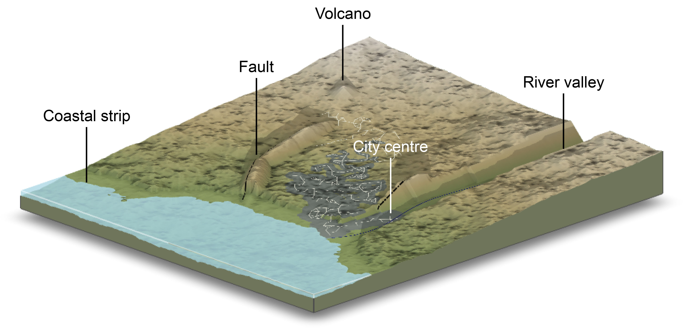
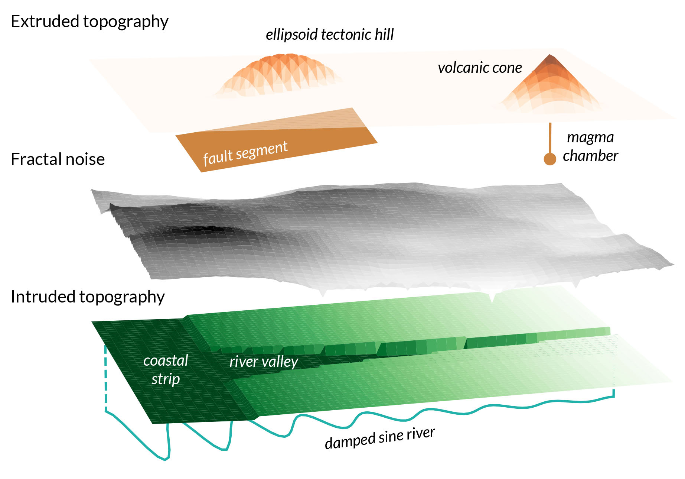

Tutorial 1: Generating a virtual environment for the GenMR digital template
Author: Arnaud Mignan, Mignan Risk Analytics GmbH
Version: 1.1.0
Last Updated: 2025-11-14
License: AGPL-3
The digital template, first described in Mignan (2022) and used in the CAT Risk Modelling Sandbox Mignan (2024), is a microcosm simulation of the complex Earth system for catastrophe dynamics R&D, multi-risk prototyping in the Generic Multi-Risk (GenMR) framework, and catastrophe risk eduction. It is defined as a virtual environment populated by loss-generating events that interact with each other and with the environment. The virtual environment, to be built in this tutorial, is composed of environmental layers that consist of sets of variables \(\theta(x,y)\) defined in a spatial grid of coordinates \((x,y)\). Each layer may be altered by environmental objects located within the layer. The parsimonious complex Earth system finally consists of a stack of interacting environmental layers defined in the natural, technological and socio-economic systems. The loss-generating events that populate the virtual environment will be defined in the next tutorial, and their occurrence rates and interactions in a third and final tutorial.
Currently, a limited number of environmental layers and objects are available (Fig. 1, Table 1). This notebook provides a concise overview of these layers using a default parameterisation, with alternative scenarios to be introduced later in the How-To Guides. The outputs generated here will serve as input for hazard and risk assessments in the subsequent tutorials.

EnvLayer_ID (Python classes).Environment |
ID |
Layer |
Variables |
Properties (examples) |
Object dependencies\(^*\) |
References |
|---|---|---|---|---|---|---|
Natural |
|
Topography |
Elevation \(z\) |
Slope, aspect |
Geological & hydrological objects |
Mignan (2022) |
Natural |
|
Soil |
Depth \(h\) |
Factor of safety |
- |
Mignan (2022) |
Natural |
|
Natural land |
State \(S\) |
- |
- |
Mignan (2024) |
Technological |
|
Urban land |
State \(S\) |
Exposure value, year built |
Road network |
Mignan (2024) |
The environmental layers are generated as follows:
Topography: Represented as elevation, \(z\) (m), the generic topography is defined by a west-dipping slope and a fractal dimension between 2 and 3. Environmental objects associated with peril sources modify the topography through intrusion and extrusion rules. The overall process, illustrated in Figure 2, combines methods from solid geometry and morphometry. Further details can be found in Mignan (2022). The main properties of the topography layer include terrain slope [\(^\circ\)] and aspect [\(^\circ\)].

Soil: Characterised by the soil thickness, \(h\) (m), which is initially spatially uniform. It can later vary through mass movement processes (using the landslide cellular automaton (CA) introduced in the next tutorial) or by a simpler rule applied here: \(h = 0\) if the soil is unstable at \((x,y)\). Other soil properties remain fixed parameters at this stage. A key property of the soil layer is the factor of safety, \(F_S\), which indicates whether the soil is stable, critical, or unstable.
Natural land: Defined by the state \(S\), with \(S=-1\) for water, \(S=0\) for grassland, and \(S=1\) for forest. These classes represent the pre-urbanised land cover. All grid locations \((x,y)\) are considered forested except those above an elevation-dependent tree line (grassland), or below sea level (\(z = 0\)) and along river channels (water).
Urban land: Represents the built environment, where the state \(S\) overwrites the natural land classification: \(S = 2\) for housing, \(S = 3\) for industrial, and \(S = 4\) for commercial areas. The city is generated using a hybrid model that combines the SLEUTH city growth CA (ref), a road network CA (ref), and a land-use transformation function (ref) (see Mignan, 2024, for details; Fig. 3). A key property of the urban-land layer is the asset value per pixel, which serves as the exposure component in the subsequent loss assessment tutorial.
ADD Fig. 3 - from Mignan (2024)…
Sections 1 and 2 detail the simulation of the virtual natural and technological environments, respectively (v1.1.1). A future Section 3, to be released in v1.1.2, will describe the socio-economic environment of the digital template.
## libraries ##
import numpy as np
import pandas as pd
import copy
#import warnings
#warnings.filterwarnings('ignore') # commented, try to remove all warnings
from GenMR import environment as GenMR_env
from GenMR import perils as GenMR_perils
from GenMR import utils as GenMR_utils
GenMR_utils.init_io() # make folders /io and /fig if do not exist
1. Natural environment generation
The generic natural environment is constrained by a predominant west–east orientation, with a coastline located at x0. This configuration ensures that any water mass, when present, is systematically positioned on the western side of the grid (Fig. 1). By convention, rivers flow exclusively from east to west. This directional constraint simplifies the natural environment generator while still allowing it to represent a wide range of regional configurations.
1.1. Grid definition
All environmental layers are defined on the raster grid RasterGrid(par). The default grid parameterisation gridPar (a dictionary) specifies an active domain of 100 × 100 km, with a reference north-south coastline fixed at x0 = 0 (i.e., \(z(x_0) = 0\)). A larger computational domain, bounded by (xmin, xmax, ymin, ymax), is included to account for potential boundary effects. The active box is thus defined as (xmin+xbuffer, xmax-xbuffer, ymin+ybuffer, ymax-ybuffer). The spatial resolution is determined by the pixel width w=0.1 km. Lower-resolution grids may be defined later for specific environmental processes. In the current version, the parameter lat_deg specifies the latitude at \((x = 0, y = 0)\), which is used in hurricane size modelling. A lon_deg parameter will be added in a future release when a longitude reference becomes necessary for additional environmental processes.
gridPar = {'w': .1,
'xmin': -20, 'x0': 0, 'xmax': 120, 'ymin': -10, 'ymax': 110,
'xbuffer': 20, 'ybuffer': 10,
'lat_deg': 30}
grid = GenMR_env.RasterGrid(gridPar)
1.2. Natural peril definition (for environmental objects)
Environmental layers can be influenced by specific environmental objects; this is notably the case for the first layer to be generated, the topography. In the context of a generic and parsimonious model, only essential objects are implemented. Consequently, the environmental objects included are restricted to those associated with the perils to be modelled in later stages.
Peril |
ID |
Source |
Environmental object |
References |
|---|---|---|---|---|
Earthquake |
|
Fault of coordinates ( |
Tectonic hill |
Mignan (2022) |
Fluvial flood |
|
River modelled as damped sine ( |
River valley |
Mignan (2022) |
Volcanic eruption |
|
Volcano of coordinates ( |
Conic volcanic edifice |
Mignan (2022) |
This configuration is parameterised using the dictionary srcPar. In this example, two faults, one river, and one volcano are defined. Additional perils will be introduced in the next tutorial. At this stage, only perils that can modify environmental layers are included.
srcPar = {
'perils': ['EQ', 'FF', 'VE'],
'EQ': {'object': 'fault',
'x': [[20, 40, 70], [40, 60]], # 2 faults (2 segments, 1 segment)
'y': [[60, 75, 80], [25, 30]],
'w_km': [5, 5], 'dip_deg': [45, 45],
'z_km': [2, 2], 'mec': ['R', 'R'], # only reverse R mechanism for now
'bin_km': 1}, # fault spatial resolution
'FF': {'object': 'river',
'riv_A_km': [10], 'riv_lbd': [.03], 'riv_ome': [.1], 'riv_y0': [20], # y = A*exp(-lbd*x)*cos(ome*x)+y0
'Q_m3/s': [100e3], 'A_km2': 100*100},
'VE': {'object': 'volcano', 'x': [90], 'y': [90]},
}
src = GenMR_perils.Src(srcPar, grid)
GenMR_perils.plot_src(src)
1.3. Generating the topography, soil, and land layers
Environmental layers are defined as instance of classes EnvLayer_* (with * the layer ID; see Table 1). For this version of the digital template, parsimonious natural environment models with a minimal number of input parameters are favored for illustration purposes (at the cost of some over-simplifications). A few models will be mentioned below without going into any detail. Visit the reference manual of GenMR_Basic for an in-depth description.
The topography layer (parameterized in topoPar) is defined with the elevation \(z(x,y)\) as its main variable. It is constructed at a lower granularity with pixel width gridPar['w'] * lores_f. The process takes several successive steps:
Background
bg: Plane tilted westward with slopebg_tan(phi)anchored at \(z = 0\) atx0;Tectonic hill(s)
th: Ellipsoid(s) with axes constrained by the 3D fault segment geometry (with centroid adjustable along the \(z\)-axis byth_Dz_km) extruding the topography;Volcano(s)
vo: Cone(s) centered on the volcano coordinates with widthvo_w_kmand heightvo_h_kmextruding the topography;Fractal
fr: Fractal noise (random seedfr_seed) with fractal dimensionfr_Dfand overall amplitude a fractionfr_etaof the background topography added to the topography. Uses the Diamond-square algorithm (ref). The coastline becomes irregular aroundx0at this step;River valley(s)
rv: Flat flood plain(s) tilted westward with sloperv_tan(phiWE)and N-S extend bound by the river exponential envelope intruding the topography (with anglerv_tan(phiNS)at the northern and southern boundaries). River channel(s) 2 N-S pixels wide for smooth flow and further intruded for normal channeled flow. Remnants of the original topography remain at a ratiorv_eta;Coastal strip
cs: Coastal strip of widthcs_w_kmand slopecs_tan(phi)(<bg_tan(phi)) intruding the topography on the eastern side of the coastline. Remnants of the original topography remain at a ratiocs_eta.
At the end of the process, the layer is upscaled back to the default pixel width gridPar['w']. Except for the background topography, all other alterations are optional (th, vo, fr, rv, cs true or false).
The soil layer (parameterized in soilPar) is defined by two main variables, the soil thickness \(h(x,y)\), initialised at constant value h0_m, and the water column depth \(h_w(x,y)\), initialized at wat_h_m. In the current version, soil parameters are kept constant (effective cohesion Ceff_Pa, effective friction angle phieff_deg and soil density rho_kg/m3). \(h(x,y)\) is then updated with the method defined in corr (for correction). For simplicity, locations where the factor of safety is lower than 1 get \(h=0\) (method remove_unstable). \(h_w(x,y)\) will be allowed to vary in the next tutorial (during rainstorms).
The natural land layer (parameterized in natLandPar) is defined by the state \(S(x,y)\), with \(S = -1\) (water) for \(z(x,y)<0\) (west of coastline) and at the coordinates of the river channel(s), \(S = 0\) (grassland) for \(z\) greater than ve_treeline_m, and \(S = 1\) (forest) otherwise (ve for vegetation). This layer can be considered a sublayer of the land use layer to be defined in Section 2, with the state updated there where urbanized.
Note that an atmoPar dictionary is already defined in view of a future environmental layer to describe the atmosphere (which will later include temperature and water vapor on top of pressure pn_mbar).
topoPar = {
'lores_f': 10, 'bg_tan(phi)': 3/100,
'th': True, 'th_Dz_km': -.5,
'vo': True, 'vo_w_km': [9], 'vo_h_km': [1],
'fr': True, 'fr_Df': 2.6, 'fr_eta': .5, 'fr_seed': 1,
'rv': True, 'rv_tan(phiWE)': [1/1000], 'rv_tan(phiNS)': [1/2], 'rv_eta': .1,
'cs': True, 'cs_w_km': 10, 'cs_tan(phi)': 1/1000, 'cs_eta': .1,
'plt_zmin_m': -500, 'plt_zmax_m': 4500
}
soilPar = {'h0_m': 10, 'wat_h_m': 0,
'Ceff_Pa': 20e3, 'phieff_deg': 27, 'rho_kg/m3': 2650,
'corr': 'remove_unstable'}
natLandPar = {'ve_treeline_m': 2000}
atmoPar = {'rho_kg/m3': 1.15, 'pn_mbar': 1005}
We will build all the natural environmental layers at once. Notice that each new layer builds upon the characteristics of the previous one(s).
grid = GenMR_env.RasterGrid(gridPar)
topoLayer = GenMR_env.EnvLayer_topo(src, topoPar)
soilLayer = GenMR_env.EnvLayer_soil(topoLayer, soilPar)
natLandLayer = GenMR_env.EnvLayer_natLand(soilLayer, natLandPar)
/Users/arnaudmignan/Documents/GmbH_MRA/2_fundedR&D/2025-2027_GenMR_SCOR/GenMR_SCOR/GenMR/environment.py:358: RuntimeWarning: invalid value encountered in sqrt
zth_tmp = Pe * np.sqrt(1 - (x_rot-xc_rot)**2/Le**2 - (y_rot-yc_rot)**2/We**2) +zc[seg]
We can already save the parameter sets and environmental layers (in folder io/) for later use:
GenMR_utils.save_class2pickle(src, filename = 'src')
GenMR_utils.save_class2pickle(topoLayer, filename = 'envLayer_topo')
GenMR_utils.save_class2pickle(soilLayer, filename = 'envLayer_soil')
GenMR_utils.save_class2pickle(natLandLayer, filename = 'envLayer_natLand')
1.4. Environmental layer properties (and attribute plotting)
Environmental layers can have built-in properties (Tab. 1). The function plot_EnvLayers() plots each environmental layer and its main properties (when the argument file_ext is filled with jpg, pdf or other formats accepted by matplotlib.pyplot.savefig, a file is created in the folder figs/):
GenMR_env.plot_EnvLayers([topoLayer, soilLayer, natLandLayer], file_ext = 'jpg')
/Users/arnaudmignan/Documents/GmbH_MRA/2_fundedR&D/2025-2027_GenMR_SCOR/GenMR_SCOR/GenMR/environment.py:504: RuntimeWarning: divide by zero encountered in divide
FS = (par['Ceff_Pa'] / (par['rho_kg/m3'] * GenMR_utils.g_earth * h) + np.cos(slope * np.pi/180) * \

The function plot_EnvLayer_attr() plots individual attributes (incl. properties) from environmental layers. If the elevation is given in the argument hillshading_z, hill shading is added in the background.
GenMR_env.plot_EnvLayer_attr(topoLayer, 'aspect', file_ext = 'jpg')
GenMR_env.plot_EnvLayer_attr(soilLayer, 'FS')
GenMR_env.plot_EnvLayer_attr(soilLayer, 'h', hillshading_z = topoLayer.z)
/Users/arnaudmignan/Documents/GmbH_MRA/2_fundedR&D/2025-2027_GenMR_SCOR/GenMR_SCOR/GenMR/environment.py:503: RuntimeWarning: divide by zero encountered in divide
FS = (par['Ceff_Pa'] / (par['rho_kg/m3'] * GenMR_utils.g_earth * h) + np.cos(slope * np.pi/180) * \
1.5. A note on environmental layer downscaling
Different environmental processes may occur at different scales. The default resolution is defined by the pixel width gridPar['w'], which represents the finest one possible for environmental layers. A grid class instance can be downscaled with the function downscale_RasterGrid(). This was for example used to generate the topography (in EnvLayer_topo()). Another process defined at lower resolution will be the road network in Section 2 which will required downscaled terrain slope and water mask as inputs. Different pooling methods (min, mean or max) are available in function pooling(). This is illustrated below with the resolution reduced by a factor f = 50 to emphasize the impact on the layers.
f = 50
grid_downscaled = GenMR_env.downscale_RasterGrid(grid, f, appl = 'pooling')
topoLayer_downscaled = copy.deepcopy(topoLayer)
topoLayer_downscaled.grid = grid_downscaled
topoLayer_downscaled.z = GenMR_utils.pooling(topoLayer.z, f, method = 'mean') # mean-pooling example
GenMR_env.plot_EnvLayers([topoLayer_downscaled]) # notice that properties are automatically recomputed
natLandLayer_downscaled = copy.deepcopy(natLandLayer)
natLandLayer_downscaled.grid = grid_downscaled
natLandLayer_downscaled.S = GenMR_utils.pooling(natLandLayer.S, f, method = 'min') # min-pooling example
GenMR_env.plot_EnvLayer_attr(natLandLayer_downscaled, 'S')
2. Technological environment generation
The technological system refers to all things produced by humans. This includes the built environment and critical infrastructures (transportation network, energy production and distribution). Goods and services (via businesses) will be defined in the socio-economic system.
2.1. Generating the urban land layer (and road network object)
The urban land layer (parameterized in urbLandPar) updates the natural land layer by urbanising grid pixels with new states \(S = 2\) for residential, \(S = 3\) for industrial and \(S = 4\) for commercial. The city nucleates at city_seed\((x,y)\) and grows for a period city_yrs by following the main rules of the SLEUTH CA (Clarke et al., 1997; Candau et al., 2002; Candau, 2002) parameterized by SLEUTH_*. Each year, the city develops constrained on the road network configuration (an environmental object in the digital template) that grows in parallel to the city, and which is also based on a CA (Koenig & Bauriedel, 2009) with parameters road_*. After each built per simulation-year, built grid pixels get their state \(S\) following the land-use transformation function of White et al. (1997:tab.1). The full description of this hybrid city-generator will be given in a future article (Mignan, in prep. - See also Mignan, 2024:boxes 3.1-3.3).
On the SLEUTH model: Please note that the SLEUTH algorithm used for GenMR was developed from the modelling instructions provided in Clarke et al. (1997), Candau et al. (2002) and Candau (2002) to gain knowledge on the general process of city growth. It is therefore likely that the code differs in many ways from the official SLEUTH urban growth model. Consider using sleuth-automation for any dedicated SLEUTH model use. The class GenMR.environment.EnvLayer_landUrb() includes a road network CA within the SLEUTH loop and adds the land use transformation function of White et al. (1997) instead of the SLEUTH Deltatron at the end of each year-run.
Depending on the parameterization (especially on the value of city_yrs), the city generation may take more than a few minutes! (possibly half an hour for a 100-year built). To expedite the process, the user could directly load the saved default urbLandLayer class instance by fixing file_urbLandLayer = 'envLayer_natLand_default.pkl' below.
For economic loss assessment in the next notebooks, additional attributes are defined per building block, function of the occupancy class. Four generic building materials bldg_type are considered: Wood (W), masonry (M), reinforced concrete (RC) and steel (S). Building value bldg_value is estimated as a function of GDP per capita (see parameter GPD_percapita_USD) following the power-law
\(C = c_1 V^{c_2}\)
where \(C\) is the building construction cost and \(V\) the GDP per capita (assuming parity between USD and EUR). Empirical parameters \(c_1\) and \(c_2\) are obtained from Huizinga et al. (2017). For different occupancy classes, we have:
Residential: Wood (W) or masonry (M) depending on the ratio
bldg_res_wood2brick, \(c_1 = 24.1\) and \(c_2 = 0.385\);Commercial: Reinforced concrete (RC), \(c_1 = 33.6\) and \(c_2 = 0.357\);
Industrial: Steel (S), \(c_1 = 30.8\) and \(c_2 = 0.325\).
-> ADD a modifying factor with distance from city center (or built year)…
file_urbLandLayer = '' # run the city growth model if '' provided
#file_urbLandLayer = 'envLayer_urbLand.pkl'
urbLandPar = {
'lores_f': 10, 'rdm_seed': 4, # seed does not work -> find where to put it...
'city_seed': [40.5,20.5], # coordinates of city seed centre (put near river as historical centre)
'city_yr0': 1900, # year of settlement creation
'city_yrs': 100, # number of years for urban growth from seed
'SLEUTH_maxslope': 22, # cannot build above (degree) - Candau & Rasmussen (2000:2)
'SLEUTH_disp': 10, # dispersion coefficient
'SLEUTH_breed': 50, # breed coefficient
'SLEUTH_spread': 20, # spread coefficient
'SLEUTH_slope': 90,
'SLEUTH_roadg': 4, # road gravity
'road_growth': 2, # number of road network nodes generated per year
'road_Rmax': 3, # max. radius in terms of number of perpendicular cells
'road_maxslope': 10, # cannot build above (degree)
'road_X': 6, #
'bldg_res_wood2brick': .5, # ratio of number of res. blocks made of wood relative to bricks (masonry)
'GPD_percapita_USD': 40e3 # GDP per capita (USD) used to estimate construction cost for res, com, ind.
}
GenMR_utils.save_dict2json(urbLandPar, filename = 'par_urbLand')
if len(file_urbLandLayer) != 0:
urbLandLayer = GenMR_utils.load_pickle2class('/io/' + file_urbLandLayer)
print('... urbLandLayer class instance loaded')
else:
urbLandLayer = GenMR_env.EnvLayer_urbLand(natLandLayer, urbLandPar) # init city instance
for t in range(urbLandPar['city_yrs']):
if t % 10 == 0:
print(t, np.sum(urbLandLayer.built == 1))
next(urbLandLayer)
GenMR_utils.save_class2pickle(urbLandLayer, filename = 'envLayer_urbLand')
0 1
10 2598
/Users/arnaudmignan/Documents/GmbH_MRA/2_fundedR&D/2025-2027_GenMR_SCOR/GenMR_SCOR/GenMR/environment.py:889: RuntimeWarning: invalid value encountered in scalar power
pr = ((par['SLEUTH_maxslope'] - np.round(slope)) / par['SLEUTH_maxslope'])**expo
20 7679
30 15377
40 24897
50 36729
60 49450
70 62986
80 75575
90 87194
2.2. Environmental layer properties
We will again use the function plot_EnvLayer() to display the environmental layer main attributes and other properties. For a landUrbLayer class instance, the main attribute is the land-use state \(S\). The two properties are the linked road network roadNet and the asset value expo_value (function of a simple function relating price/m\(^2\) per occupancy type - add ref). The asset value will represent the exposure data for risk assessment in the next tutorial. More attributes are actually available (see full list in Table A1) and can be plotted individually by using plot_EnvLayer_attr() (an example is given below for year built).
#GenMR_env.plot_EnvLayers([urbLandLayer], file_ext = 'jpg')
GenMR_env.plot_EnvLayers([topoLayer, soilLayer, natLandLayer, urbLandLayer], file_ext = 'jpg')
GenMR_env.plot_EnvLayer_attr(urbLandLayer, 'built_yr')

# TO DO: define critical infrastructure attribute for explosion sources in tutorial 2...
References
Candau JT (2002), Temporal calibration sensitivity of the SLEUTH urban growth model. Master Thesis, University of California Santa Barbara, 130 pp.
Clarke KC, Hoppen S, Gaydos L (1997), A self-modifying cellular automaton model of historical urbanization in the San Francisco Bay area. Environment and Planning B: Planning and Design, 24, 247-261.
Koenig R, Bauriedel C (2009), Generating settlement structures: a method for urban planning and analysis supported by cellular automata. Environment and Planning B: Planning and Design, 36, 602-624.
Mignan A (2022), A Digital Template for the Generic Multi-Risk (GenMR) Framework: A Virtual Natural Environment. International Journal of Environmental Research and Public Health, 19 (23), 16097, doi: 10.3390/ijerph192316097
Mignan A (2024), Introduction to Catastrophe Risk Modelling - A Physics-based Approach. Cambridge University Press, doi: 10.1017/9781009437370
Morgan-Wall T (2022), rayshader: Create Maps and Visualize Data in 2D and 3D. https://www.rayshader.com, https://github.com/tylermorganwall/rayshader, https://www.rayshader.com/.
White R, Engelen G, Uljee I (1997), The use of constrained cellular automata for high-resolution modelling of urban land-use dynamics. Environment and Planning B: Planning and Design, 24, 323-343.
Appendix
EnvLayer_ID.Layer ID |
Attribute |
ID |
Description |
|---|---|---|---|
|
Elevation |
|
Main variable (m) |
|
Object coordinates |
|
Coordinates of the coastline |
|
Object coordinates |
|
Coordinates of the river(s) |
|
Slope |
|
Terrain slope (\(^\circ\)) |
|
Aspect |
|
Azimuth that the terrain surface faces (\(^\circ\)) |
|
Soil thickness |
|
Main variable (m) |
|
Water column |
|
Water height in soil (m) |
|
Factor of safety value |
|
Describes the stability level of the soil |
|
Factor of safety state |
|
stable (\(=0\)), critical (\(=1\)), unstable (\(=2\)) |
|
Wetness |
|
Ratio between |
|
Land class |
|
Main variable, water (\(=-1\)), grassland (\(=0\)), forest (\(=1\)) |
|
Water column |
|
Water level above soil (in river) |
|
Occupancy class |
|
Main varable, residential (\(=2\)), industrial (\(=3\)), commercial (\(=4\)) |
|
Built year |
|
Year in which the city block has been built |
|
Object coordinates |
|
Coordinates of the road network |
|
Building type |
|
Wood ( |
|
Building roof pitch |
|
Low ( |
|
Building value |
|
Construction cost (currency unit) |